map


2025
inner sections of 2025:
december


november


 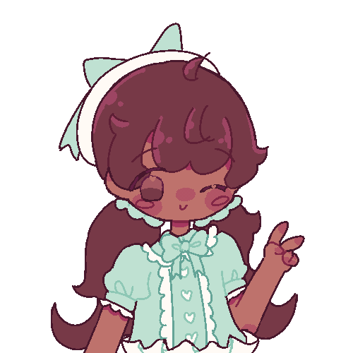
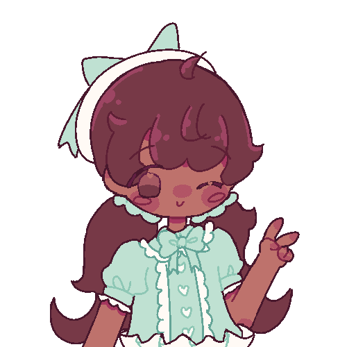


october


september


august


 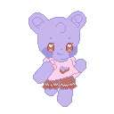
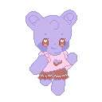

 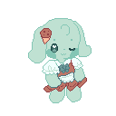
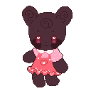
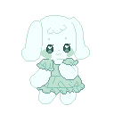
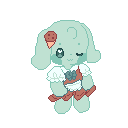
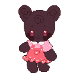
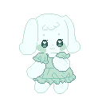
 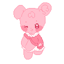
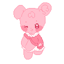
 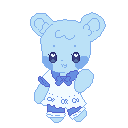
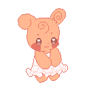
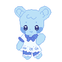
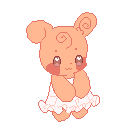
![An illustration of the character Midori Yamada from Ikizu Live! LOVE LIVE! BLUEBIRD. There are three chibi versions of her, in the top left corner she is wearing her casual outfit and is holding her pet, in the top right corner she is wearing her idol outfit from the song 'What is my LIFE?' and is posing in the air and at the bottom she is wearing the same idol outfit and is stroking her pet. She is surrounded by plants, a recycling can, a paper cup with a paper straw in it, an energy efficient light source, a paper bag and a reusable water bottle.](https://file.garden/aH6gV0OEQybcML-a/midori-sticker-sheet-shielded-robust.png)

july


 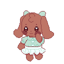
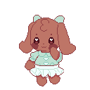

 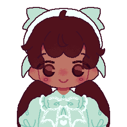
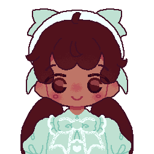


june


may


april


march


february


january